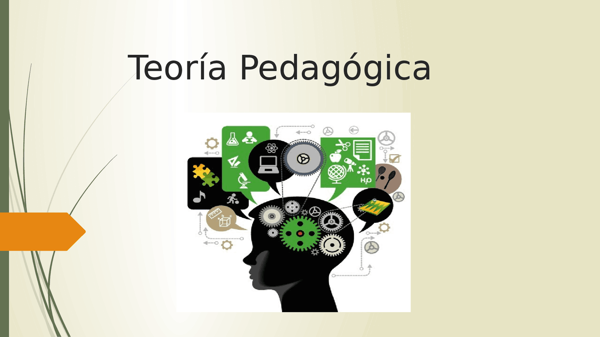

Unidad I
Teoría Pegagógica

La teoría pedagógica puede entenderse como una forma de analizar y reflexionar sobre la educación para poder comprender lo que sucede dentro de ella y darle un sentido a las acciones que se realizan. No se trata únicamente de aprender conceptos o ideas de diferentes autores, sino de utilizar esos conocimientos para cuestionar la manera en que entendemos y llevamos a cabo los procesos educativos. Desde esta perspectiva, la teoría ayuda a explicar la realidad educativa, pero también permite pensar en cómo podría mejorarse. Por eso, hablar de teoría pedagógica implica relacionarla directamente con lo que ocurre en la práctica, ya que una no debería existir completamente separada de la otra.
La educación está presente en diferentes espacios y situaciones de la vida, y por eso no puede reducirse solamente a lo que ocurre dentro de un salón de clases. Cuando hablamos de educación también hablamos de las personas, de sus experiencias, de la sociedad en la que viven y de las condiciones que influyen en su aprendizaje. La Pedagogía busca comprender todos estos elementos y, para hacerlo, necesita apoyarse en la reflexión teórica. La teoría permite mirar más allá de lo que sucede a simple vista y preguntarnos por qué determinadas prácticas educativas se realizan de cierta manera, qué consecuencias tienen y si realmente responden a las necesidades de quienes participan en ellas.
Esta relación entre teoría y práctica también es importante porque permite que el docente deje de ser visto únicamente como alguien que aplica conocimientos elaborados por otras personas. Suárez, Martín Eduardo (2006) plantea la necesidad de una teoría pedagógica con un enfoque crítico y reflexivo, capaz de generar cambios y transformaciones en los procesos que ocurren dentro del aula. Esto me parece importante porque significa que la práctica docente también puede convertirse en un espacio para pensar, analizar y producir conocimiento. Un docente necesita aprender a observar su propia práctica, reconocer los problemas que aparecen y analizar las razones que existen detrás de ellos. De esta manera, la teoría deja de ser algo lejano y se convierte en una herramienta que puede utilizarse para comprender situaciones reales.
En este punto, Valentina Cantón (2003) explica que la teoría pedagógica puede entenderse como un saber que surge de una acción pedagógica que ha sido reflexionada críticamente. Es decir, no se trata simplemente de actuar, sino de detenernos a pensar sobre aquello que hacemos. Señala que la teoría pedagógica es una “reflexión sobre la acción” capaz de reconocer problemas, contradicciones y elementos que necesitan ser comprendidos. Esto ayuda a entender por qué teoría y práctica no deberían estar separadas, mientras que la práctica necesita reflexión para poder mejorar, la teoría necesita acercarse a la realidad para tener un verdadero sentido.
Esto también permite entender por qué la formación de un profesional de la educación no debería ser solamente tecnicista. Conocer técnicas, métodos o estrategias es importante, pero no es suficiente. Si una persona aprende una serie de procedimientos y únicamente los aplica sin comprender el contexto, puede terminar utilizando las mismas soluciones para problemas completamente diferentes. La educación no funciona como una receta en la que siempre se siguen los mismos pasos y se obtiene el mismo resultado. Cada persona y cada contexto tienen características distintas, por lo que es necesario desarrollar la capacidad de analizar y tomar decisiones. Como señala Valentina Cantón (2003), la teoría pedagógica “nutre” la acción educativa, ya que a partir de la reflexión sobre la práctica pueden generarse propuestas pedagógicas con determinados principios y formas de entender al ser humano y a la educación.
También es importante reconocer que no existe una sola manera de entender la educación. Las diferentes perspectivas o paradigmas permiten observar la realidad desde distintos puntos de vista. Un paradigma puede entenderse como una forma de mirar y explicar determinados fenómenos, que también influye en la manera en que se construye el conocimiento. Dependiendo de la perspectiva que se adopte, pueden cambiar las preguntas que hacemos, la forma en que buscamos respuestas y el papel que le damos al conocimiento teórico.
Popkewitz (1984) plantea que pueden distinguirse tres paradigmas: el empírico-analítico, el simbólico y el crítico, cada uno con diferentes supuestos, intereses y maneras de entender la investigación educativa. Esto resulta importante porque una situación educativa puede analizarse desde diferentes puntos de vista. Una mirada puede interesarse principalmente por medir resultados y encontrar relaciones entre diferentes variables; otra puede enfocarse en comprender los significados que las personas construyen a partir de sus experiencias; mientras que una perspectiva crítica puede tratar de identificar las desigualdades, contradicciones y condiciones sociales que influyen en determinada situación. Por lo tanto, conocer diferentes paradigmas nos permite tener una mirada más amplia y no pensar que una sola explicación puede responder a todos los problemas educativos.
Desde una visión más positivista se da mucha importancia a la observación, la medición y la búsqueda de resultados que puedan comprobarse. En cambio, desde una perspectiva constructivista se presta mayor atención a cómo las personas construyen sus conocimientos a partir de sus experiencias y de la relación que mantienen con otras personas y con su contexto. Esto no significa simplemente que una perspectiva sea “buena” y la otra “mala”, sino que permite reconocer que existen distintas formas de acercarse a la realidad educativa.
En este punto adquiere mucha importancia la interacción intersubjetiva, porque el conocimiento no se construye completamente de manera individual. Las personas aprendemos también al relacionarnos con otras, al escuchar diferentes opiniones, al compartir experiencias y al comparar nuestras propias ideas con las de los demás. Incluso en la formación pedagógica, el intercambio de ideas puede ayudarnos a comprender mejor un tema. Muchas veces creemos que tenemos completamente claro un concepto hasta que alguien más lo explica desde otra perspectiva y nos hace verlo de una manera diferente. La educación puede entenderse como una construcción en la que participan diferentes sujetos y en la que influyen las condiciones sociales, culturales e históricas. Lo que aprendemos no aparece de la nada, sino que está relacionado con el contexto en el que vivimos. Por esta razón, tampoco podemos analizar la educación sin tomar en cuenta a la sociedad.
García-Guadilla ayuda a comprender la educación como parte de una construcción social del conocimiento. Su trabajo se ubica precisamente en el análisis de los desarrollos teóricos del campo socioeducativo y de la relación entre educación, sociedad y conocimiento. Desde esta perspectiva, el conocimiento no puede entenderse como algo aislado de la sociedad, porque se produce dentro de determinados contextos y responde también a necesidades, intereses y condiciones sociales. Actualmente vivimos en una sociedad en la que el conocimiento tiene un papel muy importante. La información circula rápidamente y las tecnologías han cambiado la manera en que las personas aprenden, se comunican y trabajan. Esto genera nuevas demandas para la educación, pero también plantea nuevos retos. Ya no basta con transmitir información, porque las personas tienen acceso a una gran cantidad de ella por diferentes medios. Ahora también es necesario desarrollar la capacidad de analizarla, cuestionarla, utilizarla y relacionarla con diferentes situaciones.
La relación entre educación y sociedad también está vinculada con la economía y la ciudadanía. La educación contribuye a la formación de personas que posteriormente participan en diferentes espacios sociales y laborales, por lo que no puede ignorar las condiciones del mundo en el que esas personas se desenvolverán. Sin embargo, la educación no es completamente neutral, porque los conocimientos que se seleccionan, las formas de enseñarlos y los valores que se transmiten también están relacionados con la sociedad.
Aquí aparece también el papel del intelectual, entendido no solamente como alguien que posee muchos conocimientos, sino como una persona que puede analizar críticamente la realidad y participar en su transformación. Desde esta perspectiva, quien se dedica a la educación no debería limitarse a aceptar las cosas tal como están. También tiene la posibilidad de cuestionarlas, investigar, reflexionar y proponer cambios. Esto resulta especialmente importante para la Pedagogía, porque trabajar con educación implica trabajar directamente con personas y con una realidad que puede transformarse.
Finalmente, considero que todo esto cambia la manera de entender el trabajo de un pedagogo. No se trata solamente de diseñar actividades, aplicar técnicas o buscar soluciones rápidas a los problemas educativos. También implica observar, investigar, cuestionar y reflexionar constantemente sobre lo que ocurre. La teoría pedagógica permite precisamente desarrollar esa mirada más crítica y consciente. Ser profesional de la educación significa reconocer que no existen respuestas únicas para todas las situaciones y que cada problema necesita ser comprendido desde su propio contexto.
En pocas palabras, la teoría pedagógica puede verse como una herramienta para pensar la educación antes, durante y después de actuar en ella. Nos ayuda a entender por qué hacemos lo que hacemos, a reconocer que nuestras prácticas pueden mejorar y a comprender que la educación está relacionada con la sociedad y con la manera en que construimos conocimiento. La teoría y la práctica no son caminos separados sino que se encuentran constantemente, se cuestionan y se complementan. Y justamente ahí está una de las partes más importantes de la formación pedagógica, el no aprender solamente a hacer las cosas, sino aprender a entender por qué las hacemos, para quién las hacemos y qué podemos hacer para que tengan un verdadero sentido educativo.